釣行日誌 故郷編
2018/06/15-17 長岡技術科学大学 釣り同好会 第２回ＯＢ会釣行
6/15（金）
朝８時に配車を予約しておいたタクシーが、予定の５分前にやって来た。ホームセンターで買った水道用パイプで自作した無骨なロッドケースとウェストバッグを持って乗り込み、豊橋駅西口に向かってもらう。金曜日の朝なので、出勤時のラッシュに遭うかと思ったが、意外とスムーズに到着した。次に駅前の小さな自転車預かり所に行き、前日の夕方に預けておいた輪行袋入りのクロスバイク、アラヤのCXを請け出す。その袋にロッドケースを入れ、肩に担いで駅に向かう。輪行袋の重さは約11kgほどで、自転車は乗ったり押したりするぶんには軽いと思うが、バラして担ぐとけっこう重い。エスカレーターに助けられて改札口のある階まで上がり、事前に買っておいた切符を通して、輪行袋をぶつけないよう注意して改札を抜ける。階段を歩いてホームに降りて乗り場の数字を探す。指定席をとった12号車の乗り場へ着くと、発車の９時０２分までにはまだ２０分以上もある。ホームのベンチに輪行袋とウェストバッグをもたせかけ、しばしくつろいでこだま６３６号東京行きを待つ。
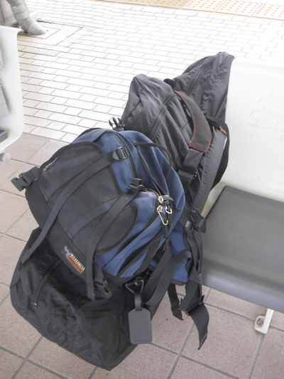
今日はこれから新富士駅に向かい、そこで富士市在住の谷倉先輩と落ち合って、そこからは先輩の車で一路、新潟県奥只見の銀山平を目指すのである。そこでは明日、一昨年も開催された長岡技術科学大学釣り同好会OB会釣行が予定されており、今年は７人のOBと当時の顧問だった丸山先生が参加することになっている。一昨年の釣行では、僕の当時の体重が85kgをオーバーするほどデブだった上に体力不足だったので、往復15kmほどの林道歩きと渓歩きとで完全にへばってしまい、死ぬほどの辛い思いをしたのだ。以来、ダイエットと１日３０分のウォーキングに取り組むとともに、クロスバイクを購入して自転車通勤を始め、１年で72kgまで体重を落とすことに成功した。しかし、その後少しリバウンドしてしまい、今回は体重75kgでの参加となった。
第２回のOB会釣行が今年の６月１６日に開催されると決まった時に、先回よりは楽に歩けるだろうという見込みはあったのだが、先回谷倉さんが持ち込んだ電動折りたたみ式自転車の威力を思い出し、自分のクロスバイクを持ち込んだら良いのでは！というアイデアが湧いたのであった。ちょうど半年ほど前に実家の片付けをしていたら出てきたマウンテンバイク用の輪行袋（1992年頃に買った年代物）を部屋に持ち帰っていたので、それが使えるかもしれないと思い、ネットでクロスバイクの輪行について調べてみると、変速機を保護するためのエンド金具という部品が要ること、新幹線には輪行袋が無料で持ち込めること、車両の最後部の座席後ろのスペースに入れると良いことなどがわかった。さっそくスポーツ用自転車専門店へ行き、エンド金具を買い込み、休日に自分のクロスバイクで前後ホイールの取り外しやエンド金具の装着、輪行袋への収納、パンク時のチューブ交換の練習などを行い、これならイケそうだとの感触を得た。問題は、輪行袋以外のロッド、ウェーダー、ウェーディングシューズなどの釣り道具・衣類をどうやって運ぶかである。さすがに大型バックパックにそれらを詰め込んで背負い、さらに輪行袋を担ぐ体力はもはや無いので、釣り具一式、衣類、土産物などはプラスティックの衣装ケースに入れ、宅配便で宿泊先の「荒沢ヒュッテ」さんに送付しておくことにした。大型バックパックでの送付は縦横幅の合計寸法が宅配便の規定より大きくなってしまい、無理だった。大きめの段ボールなら入るかなと思ったのだがこちらも無理で、結局驚くほどの大きさの衣装ケースと小さな段ボール箱の２ヶ口の荷物となってしまった。
ロッドは、購入したときに付いてきた透明プラスティック製のロッドケースでは、輪行袋に入れた際の強度に不安があったので、ホームセンターでφ70mm×100cmの水道用パイプと、それに合う栓を２個購入してでっち上げた。
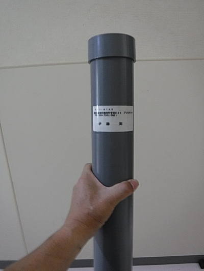
灰色１色の無骨で色気無い、重いケースだが、長年愛用している渓流用のルアーロッドを護るためにはこれが必要なのである。
こだま号を待ちながら輪行袋を見ていると、この輪行袋の最初にして最後の活躍だった1995年早春の御母衣ダム釣行のことを思い出した。当時は「名金線」というJR東海バスによる長距離路線バスが名古屋から岐阜県の白川村まで運行されており、僕はそのバスに大型バックパックと輪行袋に入れたアラヤのマウンテンバイク、マディフォックスを持ち込んで荘川村へと向かい、牧戸のバス停に着き、古い民宿へ泊まり、そこから御母衣ダムの支流へと釣行したのである。宿から国道156号線を走り、湖畔の荘川桜の大木を眺め、支流沿いの林道のゲートに着いた。林道へは一般車は入れなかったので、ゲート横をマウンテンバイクですり抜け、かなりの距離の荒れた砂利道を走って目指す釣り場に着いた、そのシーンが思い出された。
MTBのフレームにくくり付けたルアーロッドを外し、ミッチェル409を付け、対岸に残雪の白く輝くバックウォーターから釣り始めると、そこここからイワナの反応があり、五・６尾の綺麗な魚体を手にすることができた。翌日は帰りのバスが来るまで荘川本流のバックウォーターを攻めてみることにして、国道から残雪の田んぼを横切って流れ込みに着いた。雪代の重い流れがダム湖に入り、やがて止水域になるあたりに重めのスプーンを取っかえ引っかえして投げ続けたが、青白い深みからは何の反応も無かった。釣りを切り上げ宿へ戻り、荷物を持って牧戸のバス停まで行って自転車を輪行袋へたたみ込むには30分あれば間に合いそうだった。残り時間があと35分となった時、水面近くを引いていた軽めのオレンジ色をしたハスルアーに銀白色の巨大な影が煌めいたかと思うと、鉤に掛かったサクラマスが２度、３度と反転し、ふっとロッドから重量が消えた。魚体に比してフックが小さすぎたようだった。初めての大物サクラマスが残した一瞬の重い感触に後ろ髪を引かれながら御母衣ダム湖を後にしたのだった。
などと回想にふけっていると、いつの間にか９時を回り、ホームにこだま号が滑り込んできた。12号車に乗り込み、さて輪行袋を最後尾の3列がけ座席後ろのスペースに入れようかと思って見てみると、どなたかがスマホの充電をしているらしく、スペースを横切ってコンセントから座席背面のポケットまでコードが伸びている。ありゃりゃ！これはダメだとあきらめ、２列がけ座席の幅の狭いスペースに無理矢理かつ慎重に押し込み、D席に座った。
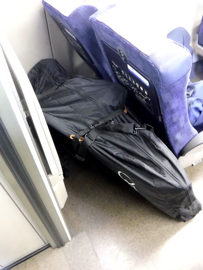
各駅停車なので、頻繁に途中で乗車してくるお客さんたちが、カバンやキャリーバッグを輪行袋の端に当てるのに肝を冷やしながら、なんとか新富士駅に到着した。待ち合わせ場所の南口に出てみると、まだ谷倉先輩の姿は無い。重い輪行袋を肩から降ろし、一息ついていると、すぐに谷倉さんが現れた。乗降用の駐車場に車を停めるのに手間取ったらしい。お久し振りですの挨拶を交わすと、谷倉さんがアメリカ・シカゴにあるフィールド自然史博物館のおみやげの、いろいろな恐竜が描かれたコットンハットをくださった。サイズも密度の薄い割りに大きな僕の頭にピッタリで、いたく感謝して御礼を述べ、車まで行ってリヤゲートを開け、先輩の電動折りたたみ式自転車の上に、横にした輪行袋を気を付けて積み込む。サイズ的には余裕である。
さあ、銀山平までの約370kmのドライブが始まった。いざ新東名のインターへ、と行きたい所であるが、私たちには他の参加メンバー、宮田先輩から託された重要な任務があった。それは釣り具店でのミミズの調達である。都合の良いことに、新富士駅から新富士インターチェンジまでの間に、チェーン店のイシグロがあったので、そこへ寄る。豊橋のイシグロよりも店の大きなことに驚いたが、谷倉さんは慣れた足取りでスタスタと一直線にミミズ箱の入った冷蔵ケースの前まで向かい、さっそく箱を開けて品定めを始めた。３種類ほどのパッケージにミミズが入っていたが、元気の無さそうな箱、細いミミズの箱などは迅速に除外し、谷倉さん、宮田さん、そして場合によっては沢へ餌釣りで入るかもしれない山口さんの分、８箱：約6,000円ほどを選んでレジへ向かう。常連客であろう谷倉先輩の顔を見て、係のお兄さんが愛想良く応対してくれた。これで餌釣り組は安心である。
午前11時頃に新東名に乗り、御殿場で東名に合流、そして海老名のジャンクションで圏央道に入り、さらに鶴ヶ島JCTから関越道に乗った。カーナビと先輩のスマホの Google Map を併用しての道案内を受け、順調に車は進む。途中午後1時前頃、サービスエリアに寄り昼食をとった。
有名な小説の冒頭みたいではあるが、国境の長いトンネルを抜けると、懐かしの湯沢の町やスキー場が左右に広がり、やがて魚野川の流れを渡り、２時半頃に小出ICを降り、スマホで探した近くのダイソーへ寄り、保冷剤を購入した。そしていよいよ国道352号線を走り、シルバーラインを目指す。途中で運転を代わりましょうかと言ったのだが、谷倉さんは余裕でここまで来てしまった。
と、突然先輩が、
「伊藤、ここで運転代われ」
と言う。広めの路肩に車を停めた谷倉先輩は、道路脇の畑を目指して歩いて行く。
『おお！ やはり今年もか！』
ビニール袋に入って売られている釣具屋の疲れたミミズよりも、農村部の草捨て場などで探す新鮮なミミズの方がはるかにイワナの反応が良いのだ。しばらく探し歩いていた先輩が、とある畑の横にあった数本の朽ち木を見つけた。僕がウェストバッグに入れておいた自転車いじり用の軍手を左手にはめ、右手に棒きれを持って手際よく朽ち木やら土やらをほじると、居るわ居るわピクピクと活きの良い赤いミミズがたくさん見つかった。あらかじめさっきのダイソーでもらっておいた大きめのビニール袋に次々とつまんでは入れて行く。谷倉さんの釣りの腕前はもちろんだが、ミミズの居場所を探し当てる野性の嗅覚には本当に恐れ入った次第であった。
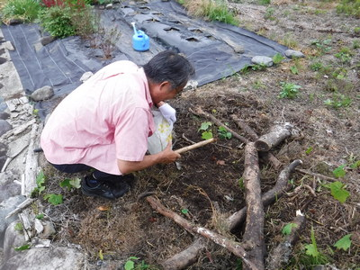
さぁ、大漁のミミズをビニール袋に大事にしまい、後部座席の足元に置いて出発である。銀山平はもうすぐだ。
国道352号線から左折し、今はもう使われていない奥只見シルバーラインの料金所ゲートを抜け、長短数多いトンネル群を通り、車は銀山平を目指す。大学時代からこれまでおそらく100回以上は通ったであろうこの道を、谷倉先輩は軽快（ややコワイ）ハンドルさばきで登って行く。僕が学生だった頃は、よく宮田さんの車に乗せてもらって釣行したものだったが、真夜中に大学のある長岡市から猛スピードで飛ばしてきて、シルバーラインの中で先行車に追いつくと、限られた直線区間で強引に追い越してぶっちぎる宮田さんの運転に肝を冷やしたことをまざまざと思い出した。昔と比べると舗装や標識、案内板などが良く整備されているなあと感じた。
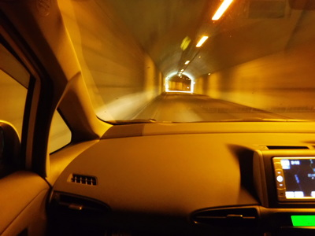
いよいよトンネルの中の三叉路を右折し、銀山平に出て、北ノ岐川に架かる橋に午後３時半に着いた。さっそく車を橋の上に停め、流れを見下ろして魚影を探す。両岸の水際まで護床ブロックが敷き詰められており、中央は深い淵になっている。しかし大物の魚影は見えなかった。続いて上流の石抱橋に向かい、この橋の下の大きな淵を２人して覗き込む。 左岸側の白っぽい岩盤の上に、20～25cmほどの魚影が数尾見えた。ウグイかもしれなかった。秋になればこの淵にも銀山湖から大物が遡上してきて休むことだろう。
下見が終わり、いよいよ奥まったところに集まって建っている民宿のひとつである荒沢ヒュッテに車を向ける。すると、支流に架かる橋の上を、中くらいの大きさのニホンザルが渡っている。
「あっ！サルだ！」
思わず車を停め、窓からカメラを出して撮す。橋のたもとのブロック積み擁壁の上に子ザルが２尾くつろいでおり、さっき橋を渡ったサルは繁みへと消えた。しばらく見物していたが、やがて皆森へ帰っていった。
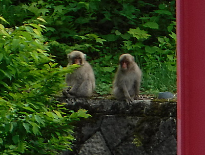
いろいろあって荒沢ヒュッテに着いたのが午後４時少し前。駐車場脇の水槽に泳ぐ大イワナやサクラマスに見とれつつ玄関に入ると、おかみさんが出てくれて、お久し振りですとの挨拶を交わし、ロッジの鍵を借りた。御主人は用事で出かけているとのことだった。
僕同様釣り具一式を宅配便で送ってある徳田先輩、山口先輩、中島先輩の荷物もロッジまで運んでおこうと思って訪ねると、すでに御主人が運び入れておいてくれたそうで恐縮して御礼を述べた。僕の衣装ケースはずいぶん重かったので大変だったろうなと、手厚いサービスがありがたかった。ついでに入漁券を買い、いそいそとロッジへ入って釣り支度を整えた。
谷倉さんは餌釣り仕掛け、僕はルアーのタックルを整え、午後４時半頃から最寄りのポイントへ入渓した。魅力的なエメラルドグリーンの淵が目前に広がっている。二人とも足回りはスニーカーなので、岸辺の足場の良い所から竿を出した。お気に入りのミノーをそれらしい筋に２投、３投と投げ入れてみるが、魚の反応は無い。さっき橋の上から見たのはイワナではなく、ウグイなのだろうか？淵の流れ出しに藪の被さったポケットが見えたので、左岸沿いに降りて行って、ミノーを投げてみた。ここでも反応が無い。まだ時期が早くてこんな浅いポイントまでイワナたちは出ていないのかもしれなかった。淵の流れ込みを岩盤の上から釣っていた谷倉さんにもアタリは無いようだった。
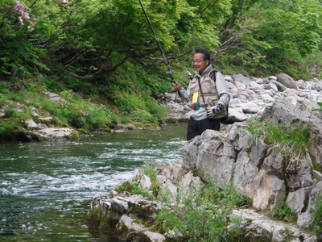
それじゃぁ別のポイントへ。ということで、車でさっさと次の淵へ向かった。ここは橋脚を護るために両岸に護床ブロックが敷かれており、その影には１尾くらいイワナの大物が居てもよさそうな雰囲気だった。ブロックの根元ぎりぎりにしつこくミノーを打ち込んでみるが魚の反応は無い。そうこうしているうちに、淵の真ん中を流していた谷倉さんの竿にアタリが来た。プルプルと震えながら上がってきたのは15cmほどのウグイであった。写真を撮そうと構えると、谷倉さんは、
「いいよいいよ。」
と言って笑っていた。
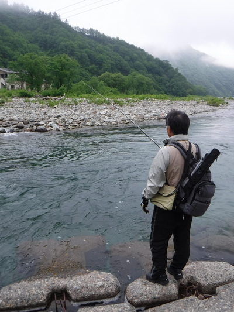
さらにポイントを移動し、本流の流れ込みまでやって来た。谷倉さんは、右岸から出てきている堰堤の多い沢へ入って行き、僕はバックウォーター目指してスニーカーで歩み込んで行く。今年は河原が乾いており、普通の靴でも問題無く歩けた。対岸の主流が湖水にぶつかる辺りに人影が見える。どうやらフライの人らしい。よく見えなかったが、ダウンストリームに小さめのフライを投げてリトリーブを繰り返している。ようしこちらも！と意気込んで遠投の効くスプーンを結び、対岸の岸辺近くまで投げ込み、少し沈ませてから引いてくる。このバックウォーターは洪水時に洗われるのか、石が少なく、イワナの隠場が無いように思えた。徐々に釣り下り、一昨年もあった朽ちた立木のポイントまでやって来た。
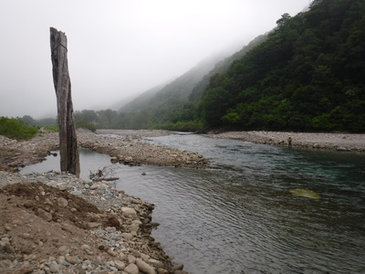
だいぶ水流は穏やかになり水深も深く、大物が居るならこの辺りのような気がした。コンデックスの金色7gを遠投し、ここでもしつこく狙う。ところが思ったより水深が浅いところがあるらしく、カウントダウンを7つ数えた所で根掛かりが起こり、泣く泣くラインを切り、貴重なスプーンを無くしてしまった。気を取り直して別のを結び、再びキャスト。しかし反応は無い。
谷倉さんの入った沢の流れ込みがあったので、そこにも投射してみるが水面は沈黙している。と、下流のほとんど流れが無くなった付近でライズが起こり始めた。波紋からしてそれほど大きな魚とは思えないが、規則正しく水面が割れる。ヤマメ？イワナ？それともウグイ？ライズ目がけてスプーンをほかり込むが、釣れそうもなかった。
少し暗くなって来た頃に、谷倉さんがやって来て、さっきまで僕が居た付近でルアーの支度を始めた。キャストとリトリーブを繰り返しながら横目で見ていると、谷倉さんのロッドが曲がった。
『おっ！ 先輩釣りましたね！』
と思って見ていると、取り込んだ谷倉さんが大声で
「ウグイ～！」
と言った。（笑）
しばらく経つと、また先輩のロッドが曲がり、またしてもウグイが釣れたようだ。さっきまであそこはさんざん攻めたのに、なぜだ？ と内心悔しく思いながら上流を見ていると、フライの人も小さめの魚を取り込んでいるようだった。魚種までは見えなかったが、フライロッドが心地よさそうに曲がっているのが見えた。しかしあの人は、どこから対岸のポイントへ入ったのだろうか？ 上流の橋から左岸伝いに河原を降りてきたのだろうか？不思議だった。
あたりが見にくくなるほど暗くなってきたので、夕まづめの釣りはこのへんで切り上げることにして、谷倉さんと車へ戻る。沢の堰堤下では、リリースサイズのイワナがいくつか釣れたそうだ。さすがに奥只見、魚影は濃いようだった。
車中で谷倉さんに、バックウォーターでの釣果を聞いてみると、
「あれはミノーだよ。色はいくつか変えたけど、ダイワシンキングの赤金やヤマメ用のグリーン(お腹側が)などだった。対岸で2尾釣ってた釣り人は、フライだったね。大きさは30cmくらいに見えたけど、イワナかヤマメかは不明だな。」
と言っていた。
宿へ戻ると、先にお風呂にどうぞ、とのことだったので、二人してお風呂で長旅と夕まづめの釣りの疲れを癒した。ちょうど良い湯加減が実に心地よかった。
風呂を出て食堂へ行くと、テーブルの上の料理は僕たち２人分だけで、気楽に夕食をいただいた。名前はうろ覚えだが、各種山菜の料理、ゼンマイのおひたし、蕗の煮物、キムチ大根、揚げ出し豆腐、白身の焼き魚、鶏の唐揚げ、虹鱒の刺身と、豪華な品々を存分に味わせていただいた。谷倉さんは、日本酒を少し注文されて楽しんでいた。
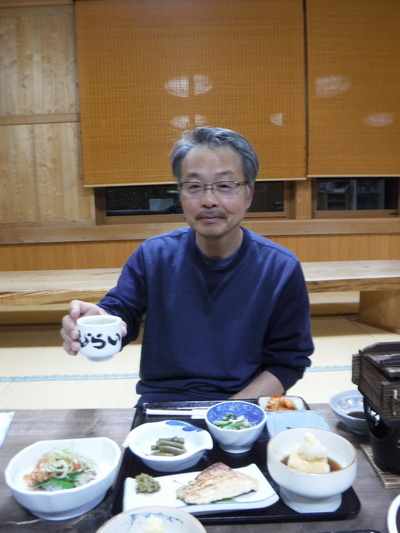
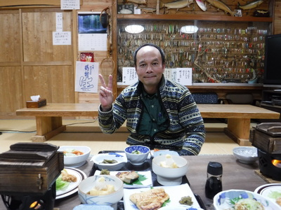
食堂の壁の一角には、上段に60-70cm級の大物イワナやサクラマス、ブラウントラウトなどの剥製が飾られ、その下のショーケースには、数え切れないほどのオールドルアー、そして開高さんや夢枕獏さんの色紙が飾ってあり、いつ見ても惚れ惚れとさせられる。テーブル脇にはまだ石油ストーブが出ており、この間まで使っていたそうだ。さすがに銀山平は寒いのだろうなと思われた。
ごちそうに舌つづみを打っていると、１日の勤めを終えられた御主人とおかみさんが食堂に来られて、いろいろ世間話をしてくれた。お孫さんが中学生になり、最近ルアーフィッシングを覚えて銀山湖で何尾も大物を上げたことや、去年から設定されたという釣りの尾数制限のこと、御主人のお父さんがクマに襲われて腰のあたりを囓られたり、お母さんが山菜採りの最中にクマに追いかけられたこと、最近も宿の近くでクマと間近に遭遇したことなどなど。隣の民宿では、出没したクマに、軒下に置いてあった天ぷら油の廃油を入れておいたドラム缶の栓をこじ開け、中の廃油を飲まれてしまったそうだ。クマはあの爪で、器用にネジ式の栓を開けることができるみたいだ。とどめは明日入渓予定の川への入り口にある橋で、昨日クマが目撃されたことを御主人が教えてくれた。聞いているうちに明日の釣行がだんだん不安になってきた。
一昨年買ったクマ避けの鈴は今年も持ってきたけれど、あれはちょっと音量不足だからなぁ.......などと思っていると、明日入渓予定の川周辺を長年狩り場にしてきたベテランのクマ打ち漁師さん二人が、やんごとなき事情でクマ撃ちを辞められてしまったことを教えてくれた。
『ゲゲ！ なんと！』
内心非常に心細くなったが、みんなで行けば大丈夫だろうと無理矢理不安を押し殺した。
夕餉のご馳走を全てたいらげて二人とも満腹となり、御主人に明日の朝食・昼食分のおにぎり２人分を作ってくださいとお願いすると、寝る前にはロッジに届けてくれると言ってくれた。宿を出て、涼しい夜風に吹かれながらロッジに戻り、明日の釣行に忘れ物の無いよう確認し、持病の薬を服用してから目覚ましを４時にセットして、柔らかい布団に入ると、あっという間に眠ってしまった。
6/16（土）
ロッジの外に車の音がして人の声も聞こえてきた。目覚まし時計を見ると、まだ２時半過ぎである。東京からの徹夜ドライブ組が予想以上に早く到着したらしい。慌てて服を着替えてドアを開けると、岡田君、山口先輩、宮田先輩、徳田先輩が、
「おはよう！」
「オーッス！」
などと元気よく部屋になだれ込んできた。おのおの運んできた荷物や発送して届いていた荷物を開けて、ロッジの広間でさっそく釣りの支度を始める。
福島方面の現場から駆けつける中島先輩はまだ来ていないので、一同６人は、釣行前の高揚した気分で談笑を始める。僕は忘れないように、頼まれて購入しておいたミノー一式が入ったケースとミミズとを宮田さんに渡した。宮田さんは一昨年の陸っぱりキャスティングでイワナの大物を釣り上げ、以来ルアーフィッシングの魅力に目覚めてしまったのである。
そうこうしているうちに車の音がして、中島さんが到着した。時刻はピッタリ待ち合わせ時刻である午前４時の10分前だった。中島さんはトローリングなのですぐ支度が出来て、出撃前に皆で記念写真を撮した。うっすらと夜が明けかけた午前４時10分であった。
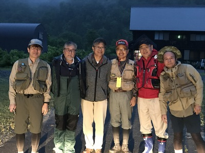
トローリング組の徳田さん・山口さんペア、そして中島さんは、中島さんの車で船外機付きの貸しボート乗り場に向かい、谷倉さん、岡田君、宮田さん、僕の４人は、２台の車に分乗して学生時代からの想い出の渓に向かった。谷倉さんが運転しながら、
「だいぶ早いけど朝のおにぎり食べようか？」
と言うので、昨夜ヒュッテの御主人が作っておいてくれたおにぎりを取り出し、ドライブしながら平らげてしまった。添えてくれたソーセージと茹で卵が美味しかった。
目指す川が近くなり、グネグネの道路を走って行くと、右側の斜面から沢が勢いよく流れ出ている、とあるカーブで谷倉さんが車を停めた。
『ははァ.......今年もやるのか！』
ここは一昨年のOB会釣行でも、行きがけの小手調べで谷倉さんが竿を出した沢なのである。さっそく荷物の中から手際よく竿を取り出し、餌のミミズ、昨日掘ってきた活きの良いやつを付ける。宮田さんも準備が整った。道路の左側、はるか下に沢が小滝となって落ち込んで出来た滝つぼがある。道路から滝つぼまでの落差はおよそ25mほどもあるだろうか？こんなポイントは普通の餌釣り仕掛けやルアータックルでは狙いようが無いのだけれど、１期生の谷倉さんが発案・開発して以来、我が釣り同好会に伝わる秘伝の仕掛けなら攻めることが出来るのであった。（笑）
谷倉さんがミミズを滝つぼに投入し、何度か筋を変えて流していると、不意にアタリがあって竿が曲がり、はるか下の水面からピチピチと身をくねらせて魚体が引き上げられてきた。よく太ってコンディションの良いその魚はなんとヤマメであった。
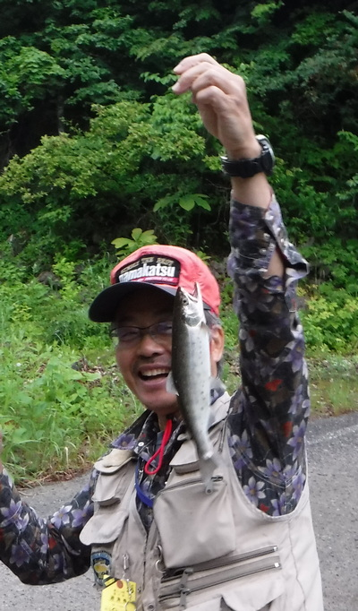
「あ～っ！ ヤマメだ！」
「まずまずの型だな」
「こんな所まで遡上しているんだなぁ！」
本日の１尾目を見ることができて、皆のテンションが上がる。
続いて宮田さんが同じようにミミズを落とし込むが、久しぶりの餌釣りと、新調したタックルに慣れていないようで、思うようにポイントを攻めきれない。隣で見ていた岡田君が竿を受け取り、
「こんな感じじゃないですかねぇ？」
と言って数投流してみた後で、再び宮田さんの番が来た。滝つぼの水面上を動いていった目印が止まったように見えた。
「あれぇ？宮田さん、喰ってませんか？」
岡田君の声に反応して宮田さんが竿を立てると手応えがあったようで、キュンと竿が曲がる。はるかな高低差を時間をかけて上げられてきた魚体は可愛いイワナだった。
「アハァ、今度はイワナだった！」
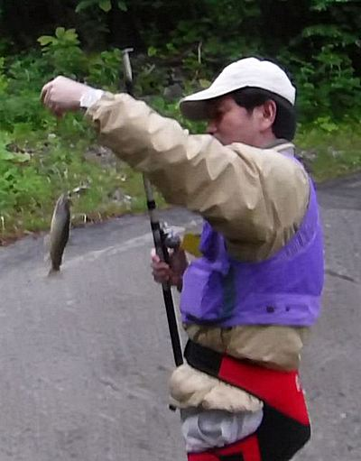
宮田さんが本日の２尾目を道路上の沢にリリースしてやって、一行は再び車に乗り込み、目的地を目指す。
いよいよ林道横の駐車場に着いた。時刻は朝５時過ぎ。まずは輪行袋を降ろし、クロスバイクの組み立てにかかる。後輪のギヤをチェーンに合わせてからフレームに入れるのに少し手間取ったが、まずまず手際よく組み立てられた。谷倉さんも、折りたたみ式電動自転車をセットアップする。一昨年は電源が入らないというトラブルに見舞われたが、今年は順調にいったようだ。続いてロッドケースから竿袋入りの２ピースルアーロッドを取り出し、ベルクロテープで自転車のフレームに固定する。
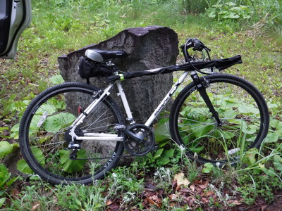
仕舞い寸法が長いので、ロッドが30ｃｍ前方にほど突き出るが、ハンドルやブレーキ操作には問題無かった。
谷倉さんは餌釣り、ルアー、フライのタックルを全てリュックに装着・収納した。宮田さんは今年、餌とルアータックル、どちらも釣行前に谷倉さんや僕からのアドバイス、ネットでの情報収集の結果購入してきた新品を持った。岡田君はフライとルアーの二本立てである。２年ぶりの源流行で、皆それぞれに気合いが入っているのであった。谷倉さんはスパイク付きのアユ足袋にウールの靴下とニッカズボン。岡田君はウェーディングシューズと短パンにタイツとネオプレンのゲーター。宮田さんは長距離歩行と低水温を考慮して、太腿までのゴム製フェルト底ウェーダーである。僕は今年も岡田君のようなスタイルで挑む。
釣り支度も自転車も準備が出来たので、いよいよ入渓予定点までの行軍が始まった。林道のゲート脇を自転車を抱えて通り抜け、一部舗装してある林道へと４人が浸透して行く。所々急坂があるが、ギヤを軽くして漕げば、何とか降りずに登ってゆけた。電動アシストのある谷倉さんは余裕である。しかし２台の自転車もスピードは徒歩とそれほど変わらず、徒歩組の岡田君・宮田さんとほぼ同じペースで林道を進んで行った。
今日の天気予報は、曇り時々小雨ということで、一昨年のような快晴では無かったが、6月中旬、春の遅い新潟の源流部は山々の新緑が綺麗であった。
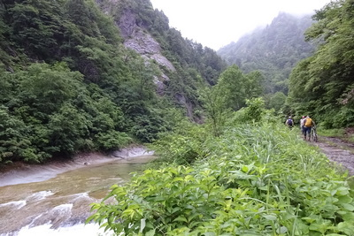
途中、林道脇に小屋が建っていた。これが昨晩、ヒュッテの御主人が語っていたクマ打ち漁師さん二人の所有する小屋なのだ。しかし彼らはクマ撃ちをリタイヤしてしまったため、今頃このあたりはクマの楽園となっていることだろう。デイパックに付けた少々心もとないクマ避けの鈴の音色と、「みんなで渡れば怖くない」式の心理で深山幽谷に分け入って行く。
舗装区間が終わり、砂利とこぶし大の石が混じるオフロードになると、急坂では自転車を漕ぐのが辛くなり、降りて徒歩組の２人と共に歩いていった。峰々の頂上のあたりには、白く霞がかかっている。雨が降ってこなければ良いがなと願いながら、ひたすら自転車を押す。
黄色いレインカバーを掛けたデイパックには、スペアのパックロッド、昼のおにぎり、500mlペットボトルのお茶とスポーツ飲料とミネラルウォーター、小型ガスコンロ、ボンベ、非常食、ヘッドランプ、着替え、リールケース、地図ファイル、などがぎっしりと詰め込まれ、背負う時に「よいしょっ！」と思わず声が出るほど重い。両肩に食い込むベルトの圧力をこらえつつ歩き続けた。
今日は渓流組は４人なので、事前に打ち合わせた結果、徒歩組の２人が林道ゲートより約3.5km上流の沢より入渓し、自転車組の２人が約8.9km上流の沢から入渓して釣り上がる、という計画であった。
林道が本流と近接している区間では、連続して現れる好ポイントを注意して観察すると、必ず魚影が見えた。川面と林道とはだいぶ距離があるのだが、この距離で見えるのだからどれも良型に違いなかった。
行軍が始まってから約１時間ほど進み、ある開けた淵の尻、河床の白い岩の上に、大きな黒い影が見えた。
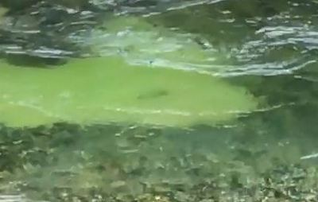
しばし４人で眺めていると、その魚、おそらくイワナだろう、は悠々と流れの中に定位して時折左右に動き、何かを捕食しているようだった。入渓予定点はまだ遠かったが、誰からともなく
「やってみようか！」
という話になり、そこで釣り支度を始めた。
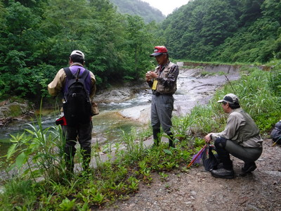
スタンバイが出来たところで、谷倉さんがリュックから高級ウィスキーの「響17年」の小瓶と小さなステンレスのグラスを取り出して、爆釣の前祝いを皆で行った。早朝のえらく早いタイミングだったが、ウィスキーが喉に沁みて美味しかった。
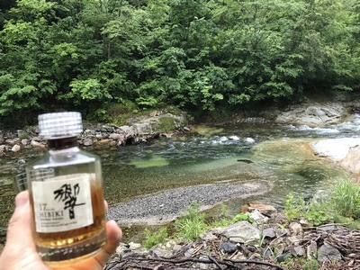
林道から注視すると、岸辺には遮蔽物が無かったので、遠投の効くルアーが良いのでは？ということで、渓流のルアー初挑戦の宮田さんの出番となった。僭越ながら伊藤がガイドを務めることになり、２人して大岩と流木溜まりの間を身を潜め、気配を殺しつつ河原に降りて行った。かつてニュージーランド北島ワイカト地方にあるお気に入りの川に、釣り友達を何人かガイドした時の心境が思い起こされた。
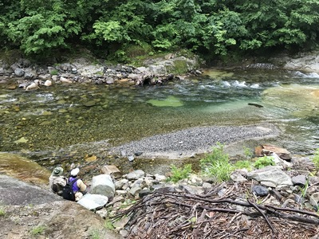
河原に降りて水面に近くなったので魚影は見えなくなったが、澪筋から判断して、だいたいの居場所を推定し、宮田さんにキャストするポイントを教えてあげた。僕の読みとしては、流れ込みの白波のあたりにルアーを投げ入れ、少し沈ませてから河床近くに定位しているイワナの眼前を通すつもりである。しかし、距離もあり、初めて使うタックルということもあって、なかなかピンポイントにルアーが入らない。宮田さんがしばらく粘ったが、イワナのアタックが無いので、それじゃぁ伊藤やってみて！ということで、ロッドを受け取り、何投かやってみるが、隣で見ているよりもはるかに難しく、思った筋を流しきれない。するとあらましを見物していた岡田君が見かねて岸辺に降りてきた。彼もしばらく挑んだが反応は無い。喰い気が無いのか流し方が悪かったのか？するといよいよ大御所の出番となり、谷倉さんが餌釣りのタックルを手に崖を降りてきてから静かにアプローチし、流れにミミズを振り込んだ。
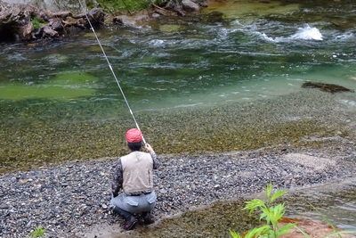
しかし、最初に目撃した位置では反応が無かった。谷倉さんは徐々に上流へ移動し、流れ込みの岩盤に立って深みを狙っていると、そこでアタリがあり、竿を曲げて本流の白っぽいイワナが上がってきた。
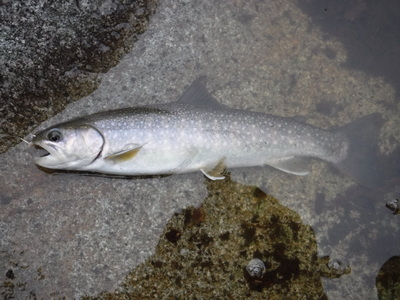
僕のホームグラウンドのイワナとは違う、白点鮮やかな良い型の魚体であった。鉤がしっかりと上顎に掛かっていた。３人は、さすがの谷倉さんの腕に感心した。丸々と太り、計ると29cmあったそのイワナは岡田君が優しく流れに戻してやった。
その後、ひとつ上流の淵をルアーと餌で交代に攻めて見たが反応が無かったので、再び林道に上がり、入渓予定点まで進み始めた。
朝７時半前に、徒歩組の入渓予定点に着いたので、そこで２＋２に分かれ、岡田君と宮田さんは沢から本流へと降りて行った。自転車組は、ゆっくりではあったが乗りながら林道を進んで行った。林道から見る本流には、大場所が連続し、いかにも大物の棲んでいそうなポイントが目白押しであった。しかし谷が深く、なかなか降りられそうなルートが少なかったし、降りたとしても川通しに遡行して行くのは極めて困難だろうと思えた。
さすがに文明の利器、自転車の威力は凄いな！などと感心してペダルを漕いでいると、カーブを曲がったその先にいきなり巨大なスノーブリッジが現れた。
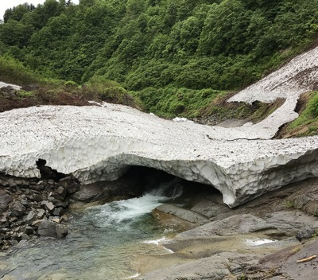
『うわっ！まだこんなに残雪がある！』
本流をまたぐスノーブリッジだけなら問題は無いのだが、困ったことに長さ50ｍほどにわたって残雪の斜面が林道に覆いかぶさり、自転車での通行は絶望的だった。急な残雪の斜面を自転車を担いで行くことも危険すぎて不可能である。仕方が無いのでそこに自転車を置き、ここから先は歩くことにした。こんな所までは誰も来ないだろうと思われたが、念のために自転車にロックを掛け、竿袋入りのロッドを持ち、いざ、雪渓渡りに挑戦である。
実はOB一同で今回の釣行の計画をメールでやりとりしている時に、今日は仕事で参加できなかった坂田先輩が、この川にはスノーブリッジや残雪があるかもしれないと教えてくれていたのだ。僕はそれを読んで、ウェーディングシューズに取り付けられる簡易式アイゼンを買って行こうかと一瞬思ったのだが、まぁそんなに大したことは無いだろうと、準備してこなかったのだ。何のためらいも無く残雪の上に踏み込んでいく谷倉さんを後ろから見ながら、顔や言葉には出さなかったが、僕は内心非常に後悔し、不安だったのである。歴戦の猛者である谷倉さんはこのくらいの雪渓はまったく問題にしないし、僕も学生時代には５月の連休に、もっと厳しい残雪の渓に入ったこともあるのだが、30年以上経って見る残雪の斜面に圧倒されてしまった。
見たところ、雪が薄いところに踏み込んだら数メートルは転落するだろうし、斜面で足を滑らせてそのまま止まらなければ、絶壁経由で転落し河原の岩に身を砕かれ、本流の身を切るような冷たい流れに放り込まれるのであろう。
急いで辺りに落ちていた木の枝を拾い、右手にロッド、左手に枝を杖代わりにして谷倉さんの後を追い、慎重に残雪の上に歩み出す。ビブラム底のウェーディングシューズであったが、雪の上には適度な凹凸と土・泥が載っており、ある程度のグリップは得られた。もし転んで斜面を滑り落ち始めたら、ロッドは手放して両手で杖を残雪に突き立てて止めるしか無いなと思ったが、そんなに上手く行くだろうか？滑落してから崖に落ちるまでの距離をかせぐため、なるべく斜面の上を通るコースを選んで進み、ようやく向こう側までたどり着いた。思わず安堵のため息が出た。次回は必ず簡易式アイゼンを買ってこようと心に誓った。（笑）
やはり固い林道の上は安心するなぁと、再び砂利道を歩き出す。先に渡り終えていた谷倉さんは、スノーブリッジの下から直径4cm、長さ50cmほどのウドを沢山ゲットしていた。（笑）
まだ入渓予定点までは4km以上はあるだろう。デイパックが重い。テクテクと歩みを進めていると、自転車で進む快適さが思い出されて残念だった。
さっきの雪渓から30分ほども歩いただろうか、またしても残雪の斜面が林道を塞いでいる。今度も慎重に、拾った木の杖を頼りに歩いて渡る。先を行く谷倉さんは、まるで雪の上で生まれ育ったかのような足取りで進んで行く。
15分ほどかけて慎重に第２の雪渓を越え、1時間ほど歩くと立派なコンクリートの橋に着いた。時刻は午前8時20分。ここが一昨年の入渓地点である。今年はさらに奥に進み、この川の最近の情報に詳しい坂田さんお勧めのポイントを目指すのだ。ひととき重いデイパックを降ろし、中からおやつのスニッカーズを取り出して２人で頬ばる。甘いチョコレートが口の中で溶けてから全身に浸透して行くのが目に見えるような気がした。
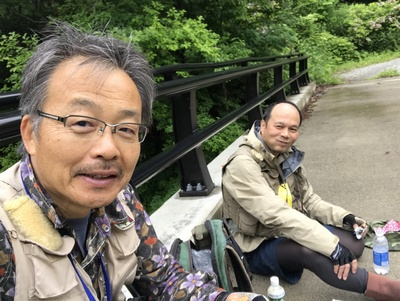
苦労して歩いてきた甲斐があり、９時過ぎに入渓予定点に到着した。古い橋のたもとから急な斜面を水辺に降りて行きながら、谷倉さんが花の写真を撮している。僕は気が急いてそれどころでは無いのだが、このへんがキャリアの差と言うものであろうか？
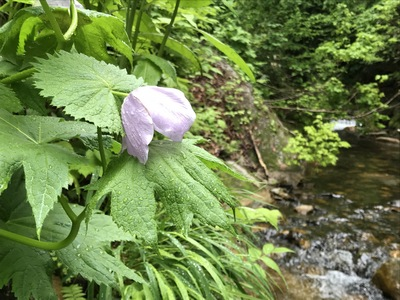
藪の中の急斜面をなかば滑落するようにして水辺に降りると、深い森に覆われたこの小さな沢には、なんとなく魚の気配があるような気がした。実際、僕が大学生だったはるか昔には、この沢の滝つぼでテンカラ釣りで大物を上げた実績があるのだ。まぁあれからかなり時代が変わったので、現在はどうか分からないけれど。ロッドを袋から取り出し、リールをセットし、ラインを通してミノーを結ぶ。まずは流れの浅い小沢を攻めるので、ドクターミノー５Fの黄色＋オレンジ色の派手なヤツにしてみた。
先に行った谷倉さんを追って、２・３歩足を進めたら、ツルンっと滑って思いっきり倒れ込んだ。大きな丸石で左肘の少し上をまともに強打したが、どうやら骨は大丈夫のようだった。ここ数ヶ月間悩まされてきた原因不明の肘痛対策で、厚手の温熱サポーターをはめていたので少しはクッションになったのかもしれない。痛みはひどかったが、貴重なミッチェル409と長年使ったロッドに損傷が無くてとても安心した。（笑） 一昨年の釣行で岡田君が履いており、本流ではなかなか優れたグリップ力を発揮していたように見えたキャラバン製のビブラム底ウェーディングシューズを、昨年僕も真似してニュージーランド釣行用に買い、今回履いてきたのだが、この沢はゴム底では非常に滑りやすいようだ。痛みをこらえつつ、１歩１歩慎重に足を進めて転ばないように谷倉さんの後を追う。
ようやく谷倉さんに追いついた。立ち止まって上流のポイントを眺めていた先輩は、
「伊藤、まずルアーでやってみるか？」
と、寛大に先攻を譲ってくれた。それでは！ということで、ミノーをフックキーパーから外し、垂らしを調節して振り込む体勢を整える。そこは、幅1ｍ、長さ2ｍほどの、淵と言うにはあまりにも小規模な落ち込みであったが、その小沢の中ではかなり有望そうな場所である。
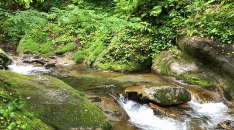
落ち込みの白泡にミノーを振り込み、流れの中を軽くアクションを付けて引いてくると、落ち込みから灰色の影が出てきて追いかけてくる。
『でかいっ！ 喰えっ！』
ミノーが深みの尻に到達し、引き上げるまでわずか６秒間ほどのリトリーブであったが、その良型のイワナは咥えきれずに反転してもとの落ち込みの方へと引き返していった。
その後、２投ほど試みたが、もうその魚は姿を現さず、今度は餌釣りで谷倉さんが攻める番になった。落ち込みにミミズを振り込み、わずかに竿先を上下させて誘いながら流れに乗せてくると、即アタリがあり、竿先が引き込まれた。先輩は掛かった魚をあやしながら、器用に長い振り出し竿の元を縮め、取り込みの準備をする。魚影が流れの尻の落ち込みをひとつ下り、白泡の中から姿を現した。尺はあるなという立派なイワナである。寄せてきてからはあまり激しく抵抗しなかったので、谷倉さんはハリスを持って抜き上げた。谷倉さんのスマホを受け取って写真を撮しましょう、などとバタバタしていたら、鉤が外れてイワナは逃げて行った。（笑）
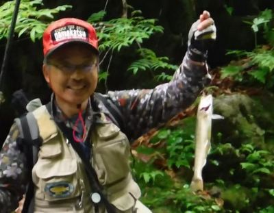
この沢の１発目で良型が出たので気を良くしてさらに遡行する。すぐ上流に、小さなナメ滝と流木や枯れ枝に囲まれて出来た深い淵があった。水深は最大1.4mほどもあろうか？またまた谷倉さんが先攻のチャンスを譲ってくれたので、ここでも出るだろうと期待と緊張に包まれた。ここじゃシンキングミノーか小型スプーンに替えた方が良いかなぁ？と一瞬逡巡したが、惰性でそのままフローティングミノーを投げ込む。渕尻に折り重なった厄介な流木の固まりにルアーを引っかけるのが心配だったのだ。
落ち込みに投射、軽くアクションを付け、淵の中央を引いてくる。最後でピックアップする時に、案の定、枝にミノーを引っかけてしまう。
『うわぁ、何というドジ！ このへんがまだまだ未熟だなぁ.......』
心中で悔恨の言葉を吐きつつ、ミノーはそのままにして谷倉さんに番を譲る。回収しに近寄ったらポイントを荒らしてしまうからだ。
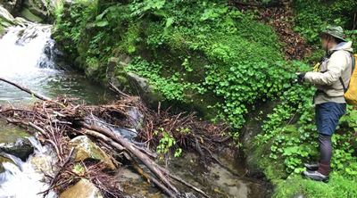
それでは！ と、谷倉さんが熟練の手さばきで流れ込みにミミズを振り込む。淵の中央に木の株が沈んでいて、釣りにくいポイントである。しかしその障害物の影には、きっと大物が潜んで居そうな気配が感じられた。道糸の２カ所に付けられた目印が、上下しながら流れ下ってくる。
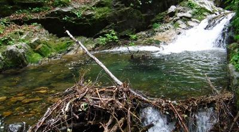
渕尻にも石の陰があり、実に良いポイントだが、なぜか反応が無い。５分ほど粘って流してみたが、ついに魚信は無かったので、僕は渕尻に歩み寄り、木の枝に刺さったミノーを回収した。小規模ではあったがそのナメ滝は遡行が難しそうだったので、ここで引き返していよいよ本流へ向かうことにした。
キウィスタイル（ウェットウェーディング）ではあまりにも冷たい６月の山岳渓流を、２人して本流に向けて歩み下って行く。今度は滑って転倒しないよう、気を付けて歩く。
本流へ出る直前に、小規模な落ち込みがあったので、先を行く谷倉さんが上流側から竿を出してみた。だが反応が無い。
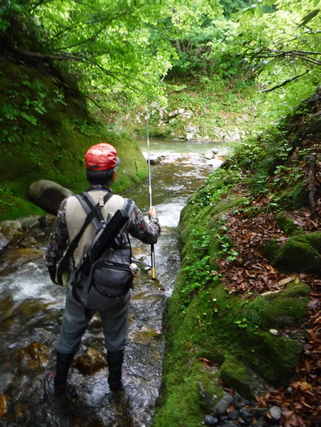
本流と沢との合流点には、なかなか魅力的な中くらいの淵があった。淵の真横に沢が合流しているので、そこに立って、今度も先に攻めさせていただく。淵の中央を横流し、落ち込みから縦に長くトレース、渕尻をゆっくり扇形に誘ったりと、手練手管を尽くしてみたがここでも魚影は出なかった。
『こんなに良いポイントで出ないとは、おかしいなぁ？』
谷倉さんもミミズを流してみるがやはり反応は無い。そこは見切って二人で本流を渡り、上流の瀬に向かう。
上流から長い瀬が続いているので、わずかな石裏や弛み、深みにもミノーを投げて引っ張ってみるが、反応が無い。まだ雪代が治まったばかりで、イワナたちは浅場には出てきていないようだった。
入渓した沢の合流点から100mあまり上がった所で見事な大滝に出た。これがきっと坂田さんの言っていた、数々の大物の実績のあるポイントだろう。僕も学生時代は幾度となくこの川に通ったのだが、さっき入渓した小沢で28cmをテンカラで上げた記憶はあるのだが、この本流の大滝にはまったく見覚えが無かった。両岸はスベスベの巨大な岩盤で、極端に狭くなった中心部を本流の豊富な水量が落差５mほどの滝となって落ち込んでいる。滝つぼはそれほど広くないが、流れ込んだ奔流が勢いよく流下している。淵尻は扇形に広い瀬になっており、２人は下流側から慎重にアプローチしていった。
『ここで出なけりゃどこで出る？』
というほどの好ポイントだったが、ここでも谷倉さんが温厚に先攻権を譲ってくれた。少し距離はあったが黄緑＋ピンクの蛍光色をしたドクターミノー５Fを流れ込みに打ち込んで、大きめのアクションを付けながら引いてくると、50cmほど潜行したルアーが瀬に出た付近でカツッとアタリがロッドに伝わり、イワナが体を横にして抵抗する。
『おっ！ 出たなっ！』
滝つぼの深みから追ってきて瀬の中で喰ったので、深く潜って抵抗できないイワナが、左右に走って抗う。弱った頃合いを見計らって流れに寄せて手元のネットまで誘導してすくう。27cmほどはあろうか、嬉しい今日の１尾目で、僕の顔は完全にニヤけているのをしっかり谷倉さんがスマホで撮してくれていた。
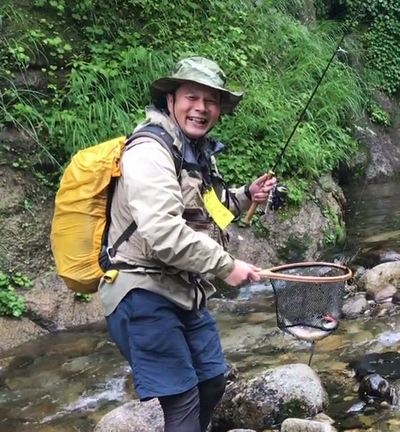
ここにはまだまだ居るだろう、ということで、谷倉さんは場を荒らさないよう慎重に右手の瀬から迂回して滑らかな左岸の岩棚に登り、そこから竿を出した。
僕は引き続き淵から離れて遠投で２尾目を狙う。左岸の岩盤のエグレを狙ったミノーがまた瀬に出た辺りでゴツンと当たった。
『来たっ！』
竿を立てて合わせたが、ブルブルッという瞬間的な生体反応を残して魚影が消えた。
『ああ～！ バレたか！』
手応えからすると、さっきの１尾目と同じくらいの大きさはありそうだった。谷倉さんは？と見ると、なかなかの良型を岩棚からゴボウ抜きにしている。
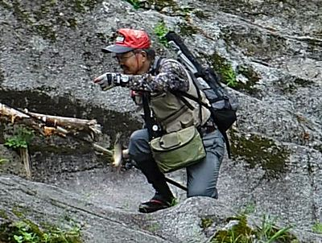
ううむ、今のバラシは惜しかった.......と後悔しつつ、なにげなく左前方に目を向けると、岩盤の根元を洗いながら流れている流心の左側に、なんとなく怪しい雰囲気のある深みが崖っぷちの岸まで続いている。
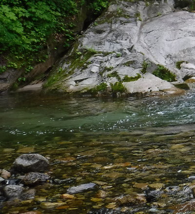
その深みの川底は砂地で、イワナが隠れられるような障害物は無かったが、4月の大物の経験もあったので、ひょっとしたらあんな弛みに大物が居るかも？と考え、ミノーを投げ込んでみた。流速は無いのでゆっくり引いてくると、大きな灰色の影が一瞬背後に迫って反転して消えた。
『今のはでかいっ！』
大イワナの鈍くささを目の当たりにしたが、自分の興奮は隠しきれない。
『ようし、もう一度！』
上流側の水際ギリギリに打ち込み、アクションをつけながら１投目よりもさらにゆっくりとリールを巻きつつトゥイッチを入れる。ドスン！ギューン！
「掛かった！」
白っぽい魚体が弛みから青色の淵の中央目がけて逸走する。竿を立ててこらえ、ジジジと鳴るドラグを少し締める。瀬まで寄ってきたイワナが、１尾目同様、魚体を横にして抵抗する。それでもリールの力には勝てず、とうとう足元まで寄ってきたので背中のネットを引っ張ってリトリーバーから外し、慎重に構えて取り込む。見事な大きさだ。
久しぶりにこんな大物を釣り上げたので、僕はすっかり舞い上がってしまって、イワナの入ったネットを低く保持して水に浸けたまま瀬を横切って、谷倉さんの釣っている左岸の岩棚まで持って行こうと歩き出した。慌てていたので水音が立ち、頭上の谷倉さんから
「静かに！」
と諫められる。案の定、びっくりした良型のイワナが僕の足元から飛び出して下流へ消えた。こりゃいかんかった、と反省し、落ち着いてから岩盤にたどり着き、滑らないよう注意して登り、谷倉さんに大物を見せた。
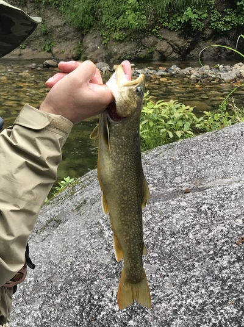
谷倉さんもイワナを見て、
「こりゃ良い型だ」
と言ってくれ、何枚も写真を撮してくれた。先輩がメジャーを取り出して計ってみると、37cmあった。これまでの自己最大記録であった、25年あまり昔の青森遠征時に釣った36cmを越え、記録を更新できた。
２人で相談し、この魚は今夜の宴会用にキープしようということになり、ナイフを借りて腹を割いてみた。大きくふくらんだ胃の中からは、3cmほどのセミの成虫がほぼ原型のまま出てきた。谷倉さんに訊くと、ハルゼミだという。セミと言えば夏しか思い浮かばないが、６月にもう成虫が現れており、それをイワナが喰っていたことに驚かされた。あの弛みで体力を温存しつつ落下してくる昆虫を狙っていたのだろう。セミの成虫ならとびきりのご馳走だったに違いない。他には多量のニンフと小型の甲虫が目に付いた。魚の腹の中をきれいにして川の水で洗い、保冷剤の入った谷倉さんの魚籠に入れてもらった。今夜美味しくいただこう。
大物を釣り上げた興奮が収まり、あらためて岩盤の上から淵を眺める。37cmが潜んで居たポイントも上からよく見える。流れの無い弛みで滝の落ち込みからの流れに乗ってくる餌を待ち構えていたのだろう。
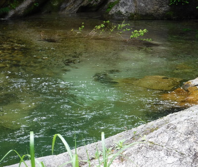
念のためにもう一度その弛みにミノーを投射すると、深い流れに入った辺りでまた良型が身を翻して追ってきた。
『まだ居るか！』
引きが早すぎて喰わせきれなかったので、今度は少しゆっくりとリトリーブ。ガツン。尺には届かないくらいのイワナが水中で反転する。岩棚の上からでは抜き上げられないので、滑らないよう注意して水際まで降り、ゆっくりと遊ばせてからネットに取り込む。これも良い型だ。
そうこうしていると、また谷倉さんにもヒットし、深いところに居たのか黒い魚体をした良型が、浅瀬に寄せられて来た。僕がカメラで動画を撮っていたので、よく写るようにしばらく遊ばせてくれた。もういいだろうということで抜き上げると、尺はあるなという大きさで、立派なイワナだった。
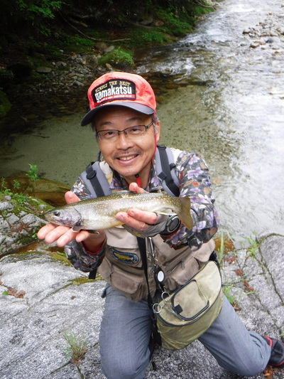
結局この大滝では、30分ほどの間に37cmを頭に尺前後を7尾釣り上げることができた。時刻は午前10：30過ぎ。もう十分釣ったな、ということで、そこから引き返し、本流を釣り下ることにした。
入渓した沢の出合いから下流には、少し深くて腰の上あたりまでありそうな瀞淵があって、そこを腰まで水に浸かって抜けるのはあまりに冷たそうだったので、上流からルアーで攻めるのみとした。何度かミノーを投げては引きを繰り返したが、なぜか反応は無かった。
そこから再び谷倉さんと入渓した沢に戻り、林道に上がることにした。先輩は
「例の流木の固まっていた淵をもう一度狙ってみるから伊藤は先に本流を釣っていろ」
と言って沢を上がっていったので、僕は橋のたもとの急斜面を草に掴まりながら林道まで掻き上がった。林道に独り立って荒い息をついていると、急に孤独感が押し寄せてきた。同時に昨夜ヒュッテの御主人がしていたクマの話が耳に甦ってきた。
『これは先輩と離れない方が良いな.......』
と判断し、小休止を兼ねて座り込み、橋の欄干にもたれ、先輩を待ちつつさっきの大物の余韻に浸った。
しばらく休憩しながら待っていると、ゴソゴソと谷倉さんが沢から草むらを這い上ってきた。どうやら件の淵では出なかったようだ。また２人連れになって安心感が出たので足取りも軽く林道を下って行く。
一昨年の釣行で、本流から林道に上がるときに使ったコルゲートパイプのある小沢があったので、今年はそこから本流に降りてみることにした。
急斜面を滑り降り、鉄製の凹凸のある暗いパイプの中を腰を屈めて歩み下る。いざ本流に出てみると、上流側はスノーブリッジで完全に塞がれていた。丸太が１本、スノーブリッジに渡し架けるようにして倒れていたので、スパイク付きのフェルト底タビを履いている谷倉さんは、熟練の足取りで倒木の上を渡り、雪渓の上から竿を出した。僕のビブラム底ではとても滑りそうで怖かったので、先輩の後を追うことはあきらめた。
下流側は？と見てみると、パイプの出口から水辺まで３ｍほど落差があり、ナメ滝状に落ちている。こりゃダメだと、そちら側へ降りるのもあきらめた。よく見ると、落差の途中に小さな水溜まりがあり、そこは谷倉さんが一昨年、手網とランディングネットの両刀使いで、潜んで居たイワナを捕まえた場所であった。
スノーブリッジの上から攻められそうなポイントを丁寧に流していた先輩であったが、とうとう魚信は無く、そこからまたコルゲートパイプを通って林道へと戻った。
この付近は、林道と河原との高低差があり、なかなか入渓する場所を見つけられずに林道を歩いて下って行った。すると、一昨年の入渓地点である沢と本流との合流点に近づき、そこにある大滝の上流側に河原へ降りる小径があった。その大滝も第１級のポイントなので、いざ攻めるべく本流を下って行く。
大滝の上に、広い岩盤があったので、時刻も昼を過ぎたことだし、２人でお昼にすることにした。重いデイパックからミネラルウォーターのボトルと、小型コンロ、ガスボンベ、コッフェルを取り出しお湯を沸かす。湯はすぐに沸き、インスタントではあったが、熱いコーヒーが２人分用意できた。メインはヒュッテの御主人手作りのお握り２つと茹で卵、そしてソーセージである。
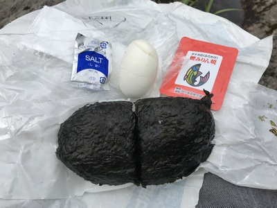
川歩きで濡れて冷えた足回りに、熱いコーヒーが美味しく、胃袋に染み渡るようだった。お弁当をあっという間にたいらげ、再び釣り支度に入る。
この大滝も岩盤が両岸から迫って隘路となった本流を、豊富な水量が勢いよく落下している。僕たちが立っている右岸側の岩盤の上には流木が積み重なり、歩くに難儀であった。さて竿を出そうか.......と思っていると、下流側の岩盤からヒョコッと動物の頭が出るのが見えた。
『ありゃ？サルか？』
ところが帽子をかぶっているのでサルでは無い。
『ゲゲッ！ 他の釣り人がこんな所まで上がってきているのか！』
あっけにとられてよく見てみると、それは宮田さんだった。（笑）２＋２に分かれた最初の入渓点から本流を釣り上がり、途中の沢を攻めたりしながら、ここで僕たちに追いついたのだ。
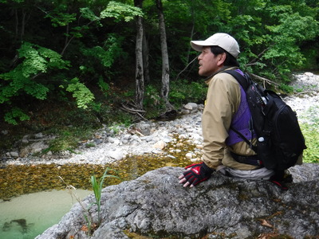
宮田さんは手短に釣果報告をして再び岩盤から降りて行き、水際から岡田君とルアーを投げ始めた。
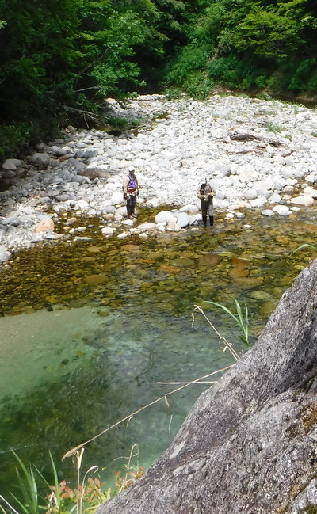
この滝つぼは、２段になっており、最初の落ち込みはやや狭くて右曲がりになっている。２段目の落ち込みは、右側に広く岩盤に囲まれた淵が形成され、その淵の真ん中に流木が沈んでおり、まことに攻めにくいポイントだった。主流は右側の淵に回り込み、そこに餌を待つイワナたちが群れなして泳いでいるのが見える。下流の渕尻、岡田君が立っているポイントからは、ルアーを投げ込んでも、沈木の上しか通せないので、底に付いている魚たちには届かないのであった。
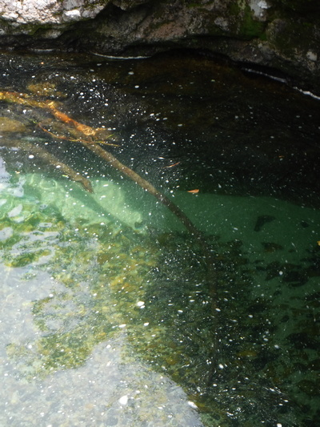
谷倉さんと僕は、岩棚のてっぺんに立って淵の底深くに潜む大物を探した。
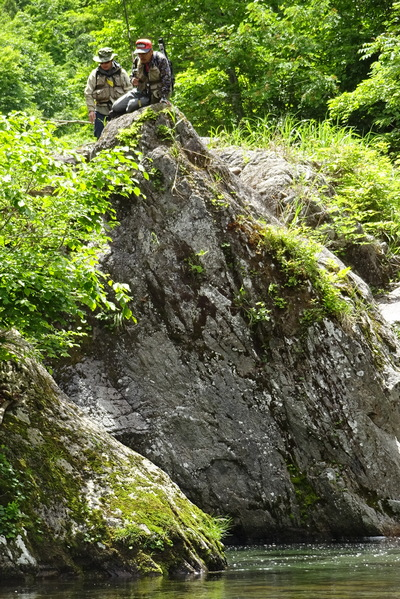
もうだいぶ釣ったので、中型以下には目もくれず、じっと眼を凝らして見つめていると、淵の巻き返しの底近くに尺は楽にありそうな大物が、流れに乗って上ったり下ったりを繰り返している。そいつを狙うべく、谷倉さんが道糸を繰り出してミミズを振り込む。しかし、大物の位置まで沈む間に小物がちょっかいを出してミミズを取られてしまう。
『なかなか上手くいかないなぁ.......』
何度かトライしてみたものの、大物は上流の荒い流れの中へと姿を消した。谷倉さんもそれを追い、上段の淵に餌を振り込む。僕も下段の巻き返しを狙おうかと思って見たものの、水面ははるか下であり、ミノーやスピナーでは引く余地が無く、スプーンを結んでジグのように使うしかないかな.......などと逡巡していると、谷倉さんがあきらめて帰ってきた。
そこからは再び４人連れの本流釣り下りとなり、いったん沢から林道へと上がった。来る途中にたくさんの良型のイワナを見て来たので、帰りはそれを拾いながら釣っていこうという作戦である。
といっても、なかなか本流に降りられるポイントは限られているので、本当に良い場所だけの拾い釣りになってしまった。歩きながらの話しでは、宮田さんは６尾、岡田君も同じくらい、それぞれ餌とルアーで良い釣果を上げたとのこと。それを聞いて一安心した。何せ、宮田さんは今日のために、秘伝の餌釣り竿、振り出し式のスピニングロッド、ウェーダーを新調して臨んだのだから。
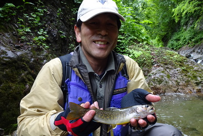
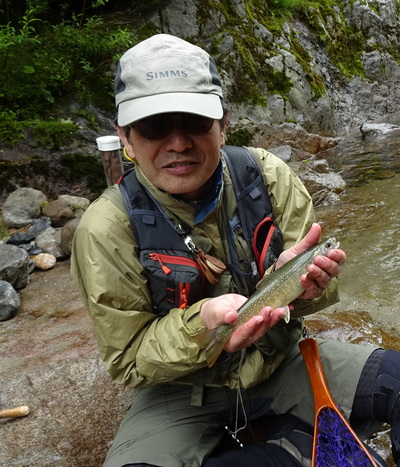
30分ほどの間、林道を歩いて来ると、水量のある沢が出ている場所があり、本流の岸辺まで足場良く降りられそうだったので、谷倉さんと宮田さんが餌釣りでトライしてみることとなった。
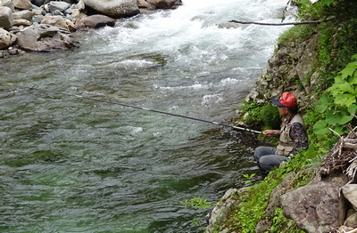
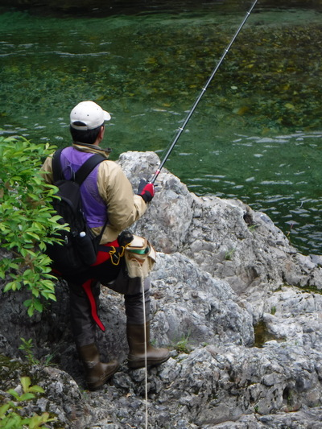
本流の豊富な水量が荒い流れ込みとなり、広い淵を形成していた。谷倉さんは流れ込みへ、宮田さんは中央の淵の真ん中を狙っている。
２人が挑んでいる間、僕は林道の上でまたコンロを出してコーヒーの支度を始めた。ところがインスタントのスティックコーヒーが残り２本しかなく、宮田さんの分が無くなってしまった。恐縮して熱い白湯で我慢してもらうこととなった。熱いものを飲んで元気を取り戻し、再び一行は山菜採りなどをしながら林道を下っていった。谷倉さんは歩きながら目敏くウドを見つけては採って、自分のリュックには入りきらなかったので岡田君に頼んで持ってもらっていた。
行きがけに魚影を見つけたポイントや、竿を出しやすい場所を攻めながら林道を下ってくると、上流側の雪渓に行き着いた。４人連れなので多少心強いが、あたりの木の枝を拾い、杖にしながら用心して渡る。午後になって気温が上がり、残雪が脆くなっているかもしれなかった。何とか渡りきると、ほっと安堵のため息が出た。
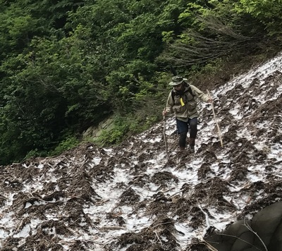
雪渓を越え、再び林道歩きが始まり、時折竿を出しながら下って行った。
下流側の雪渓に着き、谷倉さんと僕は、残雪の厚い場所を選んで高巻きするルートで渡り始めた。すると、下流側から釣り人が１人姿を現した。見るとヘルメットをかぶってルアーロッドを持った若い人である。宮田さんと岡田君は雪に埋もれた林道の上を直に横切るルートを選んだ。ちょっと危なっかしかったが、僕たちのように雪渓の上を長い距離渡るよりも安全だと判断したようだ。２人があと少しで林道の雪が無い場所までたどり着くという所で、宮田さんが進退窮まり、前にも後ろにも動けなくなってしまった。すると、若い釣り人が親切にも手を貸してくれ、ギリギリのところで宮田さんの体を引っ張り林道へと引きずり上げてくれた。
ようやく自転車にたどり着き、ロックを外して跨がった。
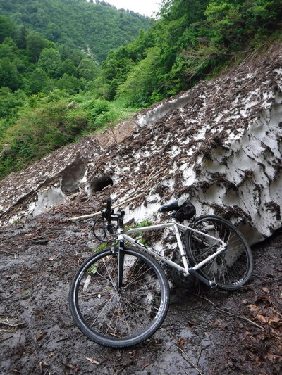
帰途は荒れた砂利道だがなんといっても下り坂なので、懸命に漕がなくても自然と走って行く。一昨年と比べればまさに極楽である。唯一怖いのはパンクであったが、注意深く石を避けて走って行った。
しばらく進むと、林道から楽に降りられるポイントがあったので、谷倉さんと宮田さんが竿を出すことになった。時刻は午後４時過ぎである。
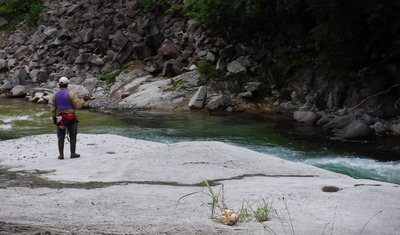
フラットで滑らかな岩盤の上に立った宮田さんが、今度は餌釣りの仕掛けで対岸の深みを狙う。いかにもイワナの居着きそうな好ポイントだったが、残念ながら魚信は無かった。谷倉さんはその上流の淵をいくつか探り、尺クラスを２尾ほど追加していた。このあたりの本流は、実に見事な渓相であり、攻めようと思ったら何日あっても足りないほどポイントが連続している。またいつか、ルアーでじっくり攻めてみたいと思った。
そのポイントから下流では竿を出すこと無く、２人は徒歩でテクテクと、もう２人は自転車でスイスイと林道を進み車を目指した。だいぶゲートに近づいたあたりで、はるか下の本流を見ると、かなりの大きさの黒い魚影が見えた。しかしあいつを狙うには、深い谷底までザイルを使って降りるしか無いと思って素直にあきらめた。
徒歩組の２人を追い越して、先に進む谷倉さんを追いかけながら走ってくると、ゲートが見え、ようやく車を停めた空き地にたどり着いた。時刻は５時15分頃。さすがに自転車の威力は目を瞠るものがあり、一昨年のような地獄的な林道歩きからは解放されて快適な釣行だった。クロスバイクを近くに出ていた沢の流れで洗ってから分解し、再び輪行袋にしまう。谷倉さんの電動折りたたみ式自転車は、簡単にコンパクトになるので、すぐにトランクに納まった。
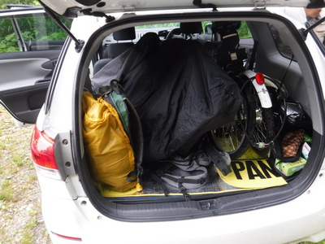
そうこうしているうちに徒歩組の２人が帰って来た。その歩みの速さに驚き、２人の健脚を僕たちは讃えた。さて、宿へ帰ろう。
荒沢ヒュッテに戻ってみると、すでにトローリング組の徳田さんと山口さんは帰って来ており、35cmほどのイワナが上がったそうだ。湖上はとても寒く、雨具を着込んでもまだ足りないほどの気温だったとのこと。もう１隻で出撃した中島さんはまだ粘っている。
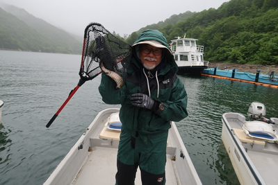
一同で釣果報告を話し合ったあとは、皆で近くの温泉「白銀の湯」に向かった。脱衣所で服を脱いでみると、またしても足の爪が内出血して黒ずんでいる。今年は靴のサイズはちょうど良かったので、これは長時間歩行によるものと思われた。
熱い湯に全身を浸すと、長かった１日の釣行の疲れが消え去るようで実に心地よかった。時刻は午後６時半を回っていた。
長かった１日の釣行の疲れを温泉でゆっくりと癒し、皆でヒュッテの食堂に向かった。あたりは薄暗くなって来ていたが、まだ中島さんだけがトローリングボートの上で粘っていた。その時ちょうど中島さんから電話連絡が入り、支流の流れ込み付近でサクラマス（30cm級、ヤマメと言うべきか？）の入れ食いになっているというホットな情報がもたらされた。一同は中島さんの粘りに驚嘆しながらも、先にビールを頼んで一杯始めてしまった。
７時半近くになり、ようやく中島さんが帰ってきた。駆けつけ三杯でビールを注いでもらい、美味しそうに飲み干した。
役者が皆揃ったところでいよいよ２年ぶりのOB会大宴会が始まり、次々と出される料理と美味しいお酒で一同はとてもシアワセな心持ちとなってきた。今宵のメニューは笹竹とシイタケのホイル焼き、ニジマスの刺身と塩焼き、天ぷら、ゼンマイなど山菜の和え物、焼き肉.......。どれも銀山平ならではの料理で、あっという間に胃袋に落ちていった。ビールに地酒の日本酒、焼酎など、僕は飲めなかったが一同は凄い勢いで杯を空にしていった。
宴も闌となってきた夜８時過ぎ、ヒュッテの御主人が腕を振るって塩焼きにしてくれた僕の釣ったイワナ、本日の大物賞37cmが登場した。
まず伊藤から食べるべし、との仰せだったので１番に箸をつけさせていただいた。背中のあたりの肉を取って口に運ぶと、これまで食べてきたイワナの中でも圧倒的なおいしさだった。釣ってすぐにシメて、保冷剤の入った魚籠に入れて谷倉さんが運んできてくれたのと、やはり料理人の腕がものを言ったようだ。それから皆も続いて箸を出し、きれいにいただいた。これで成仏してくれるかな？
大いに盛り上がった食堂での大宴会もお開きとなり、一同は心もお腹も満たされてロッジに帰ってきた。まだ９時前だったので、めいめい持ってきた土産やボトルを取り出して来て、楽しい２次会が始まった。
１日よく歩いた宮田さん、岡田君はさすがに疲れが出てきたようで、横になって皆の釣り談義に耳を傾けている。毎回繰り返して語り継がれているメンバーたちの学生時代の冒険談や失敗談、話しは尽きることが無い。あの日々から長い年月が過ぎ、すでに退官された丸山先生も、それぞれ出世されて会社では重い役職に就いている先輩方も、昔となんら変わりない語り口で武勇伝を繰りだしていた。何度聞いても面白いのは、宮田さんや徳田さんが山越えをして別の沢へ向かったときに、後ろからモノノケの吐く息、呼吸音がずっと付いてきて恐怖に落ち、一同命からがら逃げ帰った話しである。一昨年も爆笑したが、今年も笑わせていただいた。
２次会も10時過ぎにはお開きとなり、皆疲れた体をふかふかの布団に横たえた。僕も薬を飲んでぐっすりと眠りに落ちた。
6/17（日）
開けて６月１７日は快晴。ロッジの階段から小倉山や駒ヶ岳（と思われる）などの山並みの残雪が、青空を背景に美しく輝く。
一同はそれぞれ起き出してきて、ロッジの広間で茶飲み話に興じている。
そろそろ８時となり、ヒュッテの食堂に向かう。朝食のメニューは、僕の大好物のニジマスの甘露煮、目玉焼きとサラダ、ブロッコリーのおひたし、漬物、海苔、そして熱いお味噌汁である。ニジマスの甘露煮は骨まで柔らかく煮てあって、頭からしっぽまで残さず食べられる。御飯をおかわりしてしまった。
御主人が、銀山平の歴史について特集されたDVDを食堂のテレビに写してくれて、一同興味深く鑑賞した。見終わって、ショーケースを見てみると、開高さんの色紙が飾ってあり、あの特徴的な丸まっこい時で、「釣りの話をするときは両手を縛っておけ」という、たしかロシアの古諺だったと思うが、身につまされる警句であった。
美味しい朝食をいただき、皆で表に出てみると、駐車場脇に大型水槽があり、お客さんたちが銀山湖で釣ってから活かして運んできたイワナやサクラマスが泳いでいる。これらの大物には、わざわざ養殖のウグイが生き餌として与えられているそうで、飼っておく維持費もなかなか馬鹿にならない額だそうだ。残っていたミミズを蓋の隙間から投入したが、大物たちは見向きもしなかった。あの魚体にはミミズくらいではボリューム不足らしい。
などと水槽を覗き込んでいると御主人が出て見えたので、お願いして集合写真を写していただく。天気も良く、よく撮れた１枚となった。みんな口々に、
「今年も面白かったなぁ！」
「アクシデントが無くて何よりだった」
「みんな元気で集まれたのが一番！」
「今度はいつになるかな！？」
そんな喜びの言葉を交わしていた。
撮影の後、僕はロビーに売っていたニジマスの甘露煮を土産に買った。そのあとロッジに戻って、散らかった釣り道具やら着替えやらを整理し、宅配便で送るものは衣装ケースに詰めてガムテープで封をした。途中で小出のコンビニから発送するのだ。昨夜の２次会の酒瓶なども片付けた。
９時過ぎに一同の支度が整い、ヒュッテの御主人とおかみさんに御礼を言い、お別れをしてそれぞれ車で出発した。途中、絵になる木立があったので、車を停めてまた記念撮影をした。
谷倉さんが、再び例の淵に竿を出してみるというので、一同は車を停めて見学した。橋の上からは魚影は見えなかったが、谷倉さんの粘りなら１尾くらい引きずり出すかもしれなかった。
僕は橋のたもとにある開高さんの巨大な記念碑を見に、空き地に入っていった。一昨年は通り過ぎてしまったのだ。
「河は眠らない」という名句は、1908年にイングランドに生まれ、後にカナダに渡って執筆活動をした小説家・フライフィッシャーマン・自然保護活動家であったロデリック・ハイグ・ブラウン氏の名著「A River Never Sleeps」のタイトルから来ているのではないかと僕は想像しているのだが、定かではない。この小説は、終戦間もない1946年に出版されているので、開高さんが手にして読んでいた可能性も無くはないと思う。ブラウン氏は数々の釣りや自然に関する著作があるので、機会があればぜひ読んで見たいものである。
記念碑の写真を撮して橋に戻ると、谷倉さんが粘っていた。北ノ岐川の上流には豊かな森が広がり、その森がこの川の水源となって豊かな水量を維持しているのだと判る。
残念ながら魚信は無く、さすがの谷倉さんも竿を納めた。余ったミミズは全て橋から流れに投入し、魚に食べてもらう事にした。
さて、長い帰りの道のりだ。
小出の道の駅に寄ると、イワナの塩焼きが１尾500円で売っていたのには驚いた。コツ酒用のイワナは400円であった。大きさが違うのかな？と不思議だった。農協の直売店では、山ウドもビニール袋に入って一束500円の値が付いており、してみると、谷倉さんは昨日の釣行と山菜採りでだいぶ稼いだなぁと感心した。
小出インターチェンジ近くのコンビニに寄り、衣装ケースと段ボールに詰まった釣り具やらを発送した。これで気が楽になった。
谷倉さんは帰途もずっとハンドルを握り、銀山平から新富士駅までの約370kmを１人で運転していただいた。車中では、先輩の人生論や僕のこれからの生き方などについて、示唆に富んだアドバイスをしていただいた。
途中の昼食休憩を入れて、小出を出発したのが１１時、新富士駅に着いたのが午後４時半頃だった。車から輪行袋とウェストバッグを出し、谷倉さんに御礼を言って駅前で別れた。
新幹線はこだまの指定席を取り、再び車両の最後列に乗り込んだ。今度は自転車を入れるスペースも空いており、ゆっくり腰を下ろして豊橋までの約１時間を安心して過ごした。
駅についてタクシーを拾い、輪行袋はトランクには入りそうも無かったので、後部座席に入れてもらい、僕は助手席に乗って家を目指した。駐車場に着き、輪行袋を取り出すと、どっと疲れが出てきた。次回のOB会釣行は、今回の大物賞だった僕が幹事を務めることとなったので、また楽しい会を企画しよう。さて来年か、再来年か？
奥只見の豊かな自然とイワナたちは、眠ることのない河の流れの中で、変わらず僕らを待っていてくれることだろう。
釣行日誌 故郷編 目次へ
サイトマップ
ホームへ
お問い合わせ